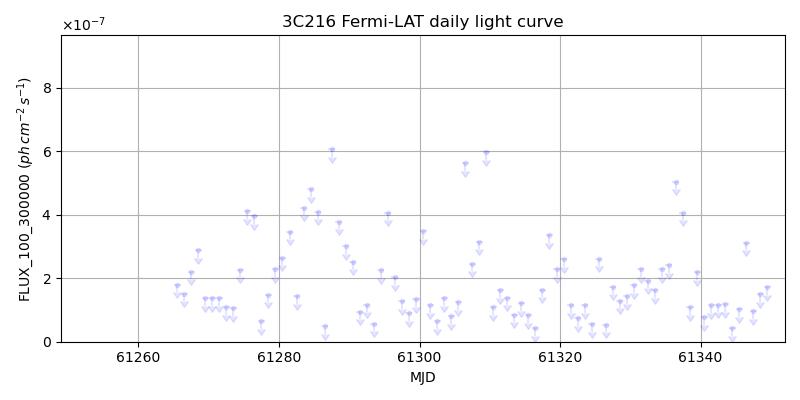
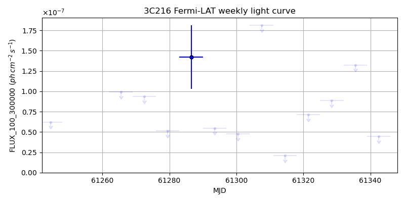
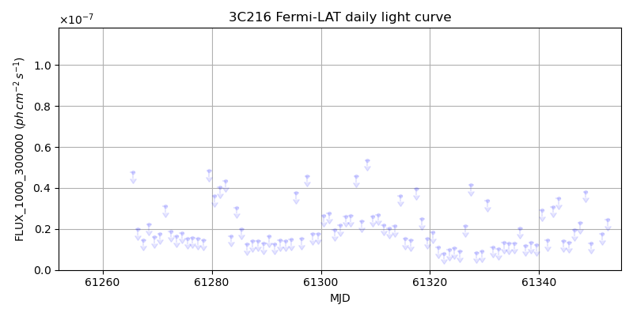
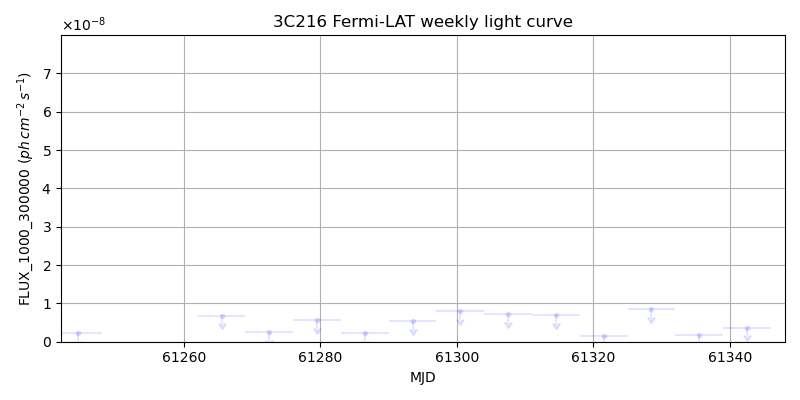

LAT Lightcurve site: https://fermi.gsfc.nasa.gov/ssc/data/access/lat/msl_lc/source/3C_216
NED: Query
Time of last update of this page: UT: 2026-11-13 16:20 (MJD: 61357.681)
| Property | Value |
|---|---|
| R.A. | 9:09:33.60 |
| Dec. | 42:53:45.6 |
| z | 0.670 |
| 3FGL SpectrumType | |
| 3FGL PL Index | -1.00 |
| 3FGL Flux_100_300000 | -1.00e+00 |
| 3FGL Flux_1000_300000 | -1.00e+00 |
| 3FGL Flux >200 GeV | -1.00e+00 |
| 3FGL Extrap. Crab >200 GeV | -1.00 |
| 3FGL Flux After EBL Absorption >200GeV | -1.00e+00 |
| 3FGL EBL Crab Fraction >200GeV | -1.00 |

| MJD | dMJD | Flux | dFlux | Frac3FGL | FracCrab>200GeV | EBLFracCrab>200GeV |
|---|---|---|---|---|---|---|
| 61348.50 | 0.50 | 1.49e-07 | 0.00e+00 | 0.00 | 0.00 | -0.00 |
| 61349.50 | 0.50 | 1.72e-07 | 0.00e+00 | 0.00 | 0.00 | -0.00 |
| 61350.50 | 0.50 | 1.36e-07 | 0.00e+00 | 0.00 | 0.00 | -0.00 |
| 61351.50 | 0.50 | 8.85e-08 | 0.00e+00 | 0.00 | 0.00 | -0.00 |
| 61352.50 | 0.50 | 1.84e-07 | 0.00e+00 | 0.00 | 0.00 | -0.00 |

| MJD | dMJD | Flux | dFlux | Frac3FGL | FracCrab>200GeV | EBLFracCrab>200GeV |
|---|---|---|---|---|---|---|
| 61321.50 | 3.50 | 7.13e-08 | 0.00e+00 | 0.00 | 0.00 | -0.00 |
| 61328.50 | 3.50 | 8.87e-08 | 0.00e+00 | 0.00 | 0.00 | -0.00 |
| 61335.50 | 3.50 | 1.32e-07 | 0.00e+00 | 0.00 | 0.00 | -0.00 |
| 61342.50 | 3.50 | 4.46e-08 | 0.00e+00 | 0.00 | 0.00 | -0.00 |
| 61349.50 | 3.50 | 7.51e-08 | 0.00e+00 | 0.00 | 0.00 | -0.00 |

| MJD | dMJD | Flux | dFlux | Frac3FGL | FracCrab>200GeV | EBLFracCrab>200GeV |
|---|---|---|---|---|---|---|
| 61348.50 | 0.50 | 3.82e-08 | 0.00e+00 | 0.00 | 0.00 | -0.00 |
| 61349.50 | 0.50 | 1.31e-08 | 0.00e+00 | 0.00 | 0.00 | -0.00 |
| 61350.50 | 0.50 | -1.00e+00 | 0.00e+00 | 0.00 | 0.00 | -0.00 |
| 61351.50 | 0.50 | 1.75e-08 | 0.00e+00 | 0.00 | 0.00 | -0.00 |
| 61352.50 | 0.50 | 2.44e-08 | 0.00e+00 | 0.00 | 0.00 | -0.00 |

| MJD | dMJD | Flux | dFlux | Frac3FGL | FracCrab>200GeV | EBLFracCrab>200GeV |
|---|---|---|---|---|---|---|
| 61321.50 | 3.50 | 1.62e-09 | 0.00e+00 | 0.00 | 0.00 | -0.00 |
| 61328.50 | 3.50 | 8.52e-09 | 0.00e+00 | 0.00 | 0.00 | -0.00 |
| 61335.50 | 3.50 | 1.87e-09 | 0.00e+00 | 0.00 | 0.00 | -0.00 |
| 61342.50 | 3.50 | 3.64e-09 | 0.00e+00 | 0.00 | 0.00 | -0.00 |
| 61349.50 | 3.50 | 1.01e-08 | 0.00e+00 | 0.00 | 0.00 | -0.00 |
--------------------------------------------------------- Using user-supplied coords: 9:09:33.60 42:53:45.6 2000 --------------------------------------------------------- FLWO UT night of: 2026-11-14 Local Sid. @ Midnight: 03:09 Sunset (-15.0) (local, UT): 18:35 01:35 Sunrise (-15.0) (local, UT): 05:42 12:42 Moonrise (local, UT): Moonset (local, UT): 20:50 03:50 Moon phase: 0.22 --------------------------------------------------------- AzTime LSID UT Obj_el Obj_az Mn_el Mn_az Sep. --------------------------------------------------------- 18:35 21:44 01:35 -15.2 6.2 20.1 218.2 149.1 19:05 22:14 02:05 -14.2 11.8 16.0 223.7 149.2 19:35 22:44 02:35 -12.6 17.2 11.6 228.6 149.3 20:05 23:14 03:05 -10.4 22.4 6.9 233.2 149.4 20:35 23:44 03:35 -7.7 27.3 2.0 237.3 149.5 21:05 00:14 04:05 -3.1 31.8 -2.2 241.2 149.6 21:35 00:44 04:35 -0.3 36.1 -9.0 244.8 149.7 22:05 01:14 05:05 3.2 39.9 -14.6 248.2 149.8 22:35 01:44 05:35 7.4 43.4 -20.4 251.4 149.9 23:05 02:14 06:05 11.8 46.6 -26.2 254.5 150.1 23:35 02:44 06:35 16.6 49.5 -32.1 257.5 150.2 00:05 03:14 07:05 21.5 52.1 -38.1 260.6 150.4 00:35 03:45 07:35 26.7 54.3 -44.2 263.8 150.5 01:05 04:15 08:05 31.9 56.2 -50.2 267.1 150.7 01:35 04:45 08:35 37.3 57.8 -56.3 270.9 150.9 02:05 05:15 09:05 42.7 58.9 -62.4 275.3 151.1 02:35 05:45 09:35 48.2 59.5 -68.4 281.1 151.2 03:05 06:15 10:05 53.7 59.5 -74.2 289.9 151.4 03:35 06:45 10:35 59.2 58.4 -79.6 306.2 151.6 04:05 07:15 11:05 64.6 55.9 -83.2 343.5 151.8 04:35 07:45 11:35 69.7 50.7 -82.1 35.1 152.0 05:05 08:15 12:05 74.4 40.8 -77.4 61.2 152.2 05:35 08:45 12:35 77.8 22.7 -71.8 73.4 152.4 05:42 08:52 12:42 78.3 17.4 -70.5 75.2 152.5 --------------------------------------------------------- Dark hours >55 deg.: 2.49 srcstart (UT): 2026-11-14 10:12 srcend (UT): 2026-11-14 12:41